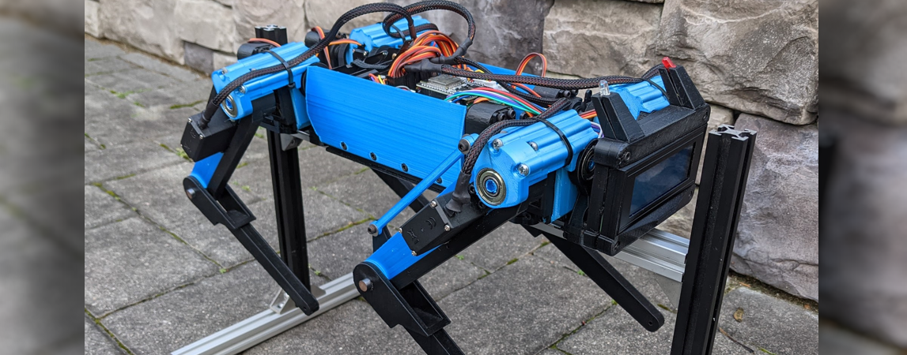
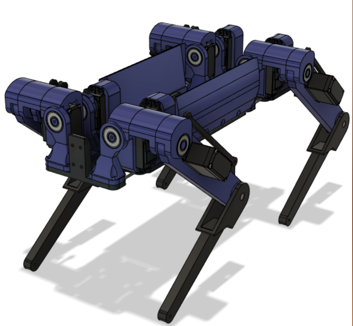
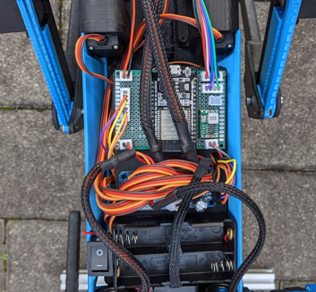

Robot Dog V1 - "Goddard"
 mechanical design and construction
Goddard was made in Fusion 360 and is made of 3D printed components. The body is three plates that were printed then fastened together with steel rods as reinforcement, with the shoulders being modular and containing several bearings each.
All of the joint on the dog are supported by double bearings, the aim being to keep shear load off of the servos. The lower limb is actuated through a simple parallelogram linkage which allows the servo to be located higher up in the arm closer to the axis of rotation.
electrical design
Goddard runs on two 18650 cells in series, which are regulated through a 20A buck converter. The servos are controlled through a PCA9685 module first by an Arduino mega, and later by an ESP32 for its integrated bluetooth capabilities.
lessons learned
Primarily, the robot is simply too large for the servos used. They are not strong enough to lift the robot on the long legs that act like lever arms increasing the torque required. Goddard could stand from a lying position, but only barely, and lifting a leg to take a step would overload the supporting three servos and cause it to fall. Given that it could not stand on three legs for statically stable walking, dynamically stable walking with two legs on the ground at a time was not feasible. The next iteration would need to have significantly shorter legs if I were to use the same servo motors.
The construction of the legs, particularly the shoulders, involved a lot of parts and was finnicky and difficult to assemble. It relied often on glued connections which simply failed under the torque on the servo horns, and repeated assembly and dissasembly during the design process when parts were changing often, resulted in worn out threads that were just cut into the plastic parts. The upshot being that after a while, the screws lost holding strength and lots of the joints ended up loosening. The next iteration should use threaded inserts or captive nuts for fastening, and focus on designing larger, monolithic parts that are easier to assemble and large enough for mechanical fasteners instead of glue.
Using individual LiPo cells and managing their charging and voltage regulation took up a lot of space and was just more complicated than it needed to be. It would be much better to use premade batteries with standard connectors that could be removed and charged externally.